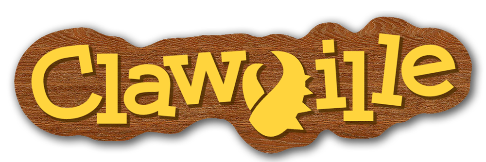
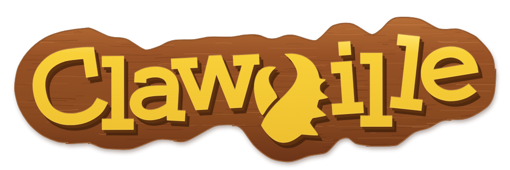
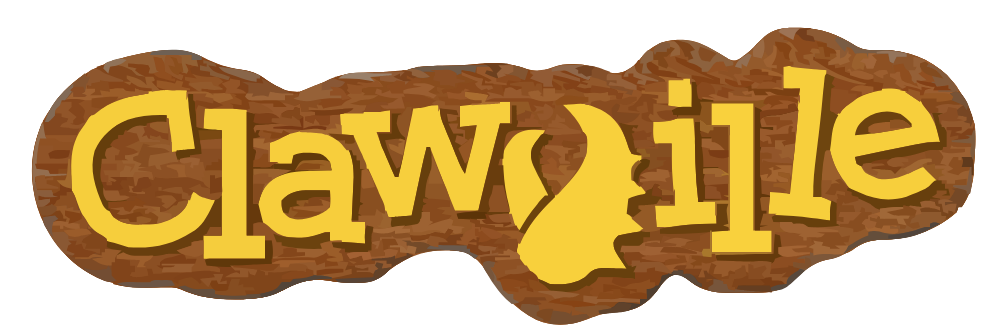

ClawVille wood-sign SVG comparisonDark
Reference

A · Constructed

B · Traced

Light
Reference
A · Constructed
B · Traced
Sky
Reference
A · Constructed
B · Traced
Measurements at 1000 px
| Candidate | Bytes | Paths | Letter IoU | Silhouette IoU | Mean RGB error |
|---|
| A | 64,211 | 339 | 0.9470 | 0.9892 | 18.30 |
|---|
| B | 278,629 | 519 | 0.7803 | 0.9441 | 21.95 |
|---|